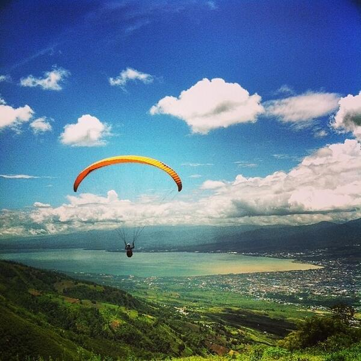

Matantimali: Surga Alam di Atas Kota Palu
Matantimali adalah dataran tinggi di Kabupaten Sigi, Sulawesi Tengah, yang terkenal dengan pemandangan indah dan udara sejuknya.
Terletak sekitar 1.500 meter di atas permukaan laut, tempat ini menawarkan panorama lima dimensi—gunung, sungai, lembah, teluk, dan Kota Palu dalam satu pandangan.
Selain jadi lokasi paralayang kelas dunia, Matantimali juga populer untuk berkemah dan menikmati sunrise yang memukau.

Spot Paralayang Kelas Dunia
- Matantimali dikenal sebagai salah satu spot paralayang terbaik di Asia bahkan dunia. Dikenal menyelenggarakan event PON XVII dan kompetisi internasional, serta memiliki kondisi angin dan termal yang ideal—para tandem paragliding tersedia dengan durasi terbang sekitar 15–20 menit. Biayanya antara Rp 500.000–750.000 per penerbangan
Camping & Fasilitas
- Tiket masuk biasa gratis, namun tarif parkir dan sewa tenda/peralatan dikenakan (sekitar Rp 6.000–10.000 untuk tiket, Rp 2.000–3.000 untuk parkir, Rp 50.000 per tenda)
- Fasilitas meliputi penyewaan tenda, kamar mandi, listrik (charging), serta warung/kuliner ringan. Area ini juga cocok sebagai tempat melihat kembang api atau fenomena alam seperti gerhana.

Panorama "Lima Dimensi"
- Dari puncak Matantimali, pengunjung bisa menikmati panorama yang disebut “lima dimensi”: Gunung, Sungai, Teluk, Lembah, dan Kota Palu. Waktu terbaik untuk berkunjung adalah saat sunrise dan sunset, saat pemandangan semakin dramatis

Lokasi & Ketinggian
- Desa dan bukit Matantimali terletak di Kecamatan Morowala/Banawa Selatan, Kabupaten Sigi, sekitar 20–30 km dari Kota Palu (sekitar 45–60 menit berkendara). Ketinggiannya berkisar antara 800–1.500 mdpl, sehingga menyuguhkan suasana pegunungan yang sejuk dan pemandangan panorama menakjubkan.